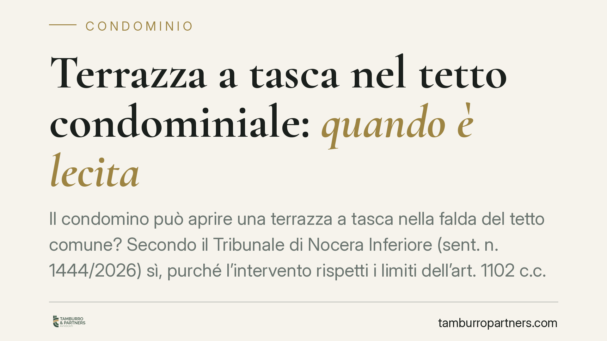

Terrazza a tasca nel tetto condominiale: quando è lecita
Il condomino può aprire una terrazza "a tasca" nella falda del tetto comune? Secondo il Tribunale di Nocera Inferiore (sent. n. 1444/2026) sì, purché l'intervento rispetti i limiti dell'art. 1102 c.c. La pronuncia precisa che il dissenso dell'assemblea, da solo, non rende illegittima l'opera. Vediamo cosa cambia per chi possiede un sottotetto e per gli altri condomini.

Il caso in breve
La cosiddetta terrazza "a tasca" (o *terrazza incassata*) è uno spazio praticabile ricavato all'interno della falda del tetto, arretrando la copertura per creare un piano calpestabile senza sporgere oltre il profilo dell'edificio. Il vantaggio è evidente per il proprietario dell'ultimo piano o del sottotetto: guadagna uno spazio all'aperto senza volumetria aggiuntiva.
Il problema è che il tetto è, di regola, parte comune (art. 1117 cod. civ.). Da qui la domanda: il singolo condomino può intervenire su un bene di tutti per ricavarne un uso esclusivo?
Il Tribunale di Nocera Inferiore, con la sentenza n. 1444/2026, ha risposto in senso affermativo, a precise condizioni.
Inquadramento normativo
La norma di riferimento è l'art. 1102 cod. civ., che disciplina l'uso della cosa comune da parte del singolo partecipante. La disposizione consente a ciascun condomino di servirsi del bene comune, anche modificandolo, entro due limiti:
- non alterare la destinazione della cosa comune;
- non impedire agli altri condomini di farne pari uso secondo il loro diritto.
Applicato al tetto, ciò significa che l'intervento è consentito se la copertura continua a svolgere la propria funzione essenziale: proteggere l'edificio dagli agenti atmosferici e garantirne la coibentazione. La terrazza a tasca, non sporgendo dal profilo della falda e mantenendo la continuità della copertura sul piano orizzontale, in linea di principio non tradisce questa funzione.
Il Tribunale ha aggiunto tre condizioni ulteriori, coerenti con la giurisprudenza di legittimità: l'opera non deve compromettere il decoro architettonico dell'edificio (art. 1120, comma 4, cod. civ.), non deve pregiudicarne la stabilità e la sicurezza, e non deve sottrarre agli altri condomini la possibilità di utilizzare la porzione comune interessata.
Il ruolo (limitato) dell'assemblea
Il passaggio più rilevante della pronuncia riguarda il valore del dissenso assembleare. Il Tribunale chiarisce che la delibera contraria, da sola, non rende illegittima l'opera.
La ragione è di sistema: l'uso della cosa comune ex art. 1102 c.c. è un diritto del singolo, che non richiede una preventiva autorizzazione dell'assemblea quando l'intervento rientra nei limiti della norma. L'assemblea non può vietare un uso che la legge consente. Di conseguenza, ciò che conta non è il voto contrario, ma la verifica in concreto del rispetto dei limiti sopra indicati.
Attenzione, però: questo non significa che il condomino possa procedere in totale autonomia. Se l'intervento incide sulla struttura o sull'aspetto esteriore, resta esposto al controllo giudiziale su decoro, stabilità e pari uso, oltre che ai profili urbanistici ed edilizi.
Implicazioni pratiche
Per chi possiede un sottotetto o un ultimo piano, la sentenza conferma una possibilità concreta di valorizzazione dell'immobile. Ma il confine tra uso legittimo e abuso resta sottile e dipende da valutazioni tecniche.
Per gli altri condomini e per l'amministratore, la pronuncia ricorda che opporsi in assemblea non basta: per contestare l'opera occorre dimostrare la violazione di uno dei limiti dell'art. 1102 c.c., tipicamente attraverso una perizia sul decoro o sulla statica.
Sul piano amministrativo, poi, la terrazza a tasca è quasi sempre soggetta a titolo edilizio: la conformità civilistica non esonera dagli adempimenti urbanistici.
Cosa fare in concreto
- Verificate il titolo edilizio necessario presso il Comune prima di iniziare i lavori: la liceità ex art. 1102 c.c. non sostituisce il permesso o la SCIA.
- Fate redigere una relazione tecnica da un professionista che attesti il mantenimento della funzione di copertura, della stabilità e del decoro architettonico.
- Documentate lo stato dei luoghi con rilievi fotografici e planimetrie prima dell'intervento, per prevenire future contestazioni.
- Comunicate all'amministratore l'intenzione di procedere: non è un'autorizzazione, ma riduce il contenzioso e chiarisce i rapporti condominiali.
- Se siete condomini contrari, non fermatevi al voto assembleare: raccogliete elementi tecnici sui possibili pregiudizi prima di valutare un'azione giudiziale.
Consigliamo, in ogni caso, una valutazione preventiva del progetto, perché la differenza tra uso legittimo e violazione del pari uso si gioca su dettagli tecnici che una perizia può chiarire in anticipo.
---
*Contributo informativo a cura di Tamburro & Partners - Avv. Giuseppe Tamburro. Non costituisce parere legale.*
Ogni condominio ha una storia a sé.
Se gestisci un'amministrazione e vuoi un confronto su una specifica questione condominiale, scrivi allo studio. Ti rispondiamo entro un giorno lavorativo.